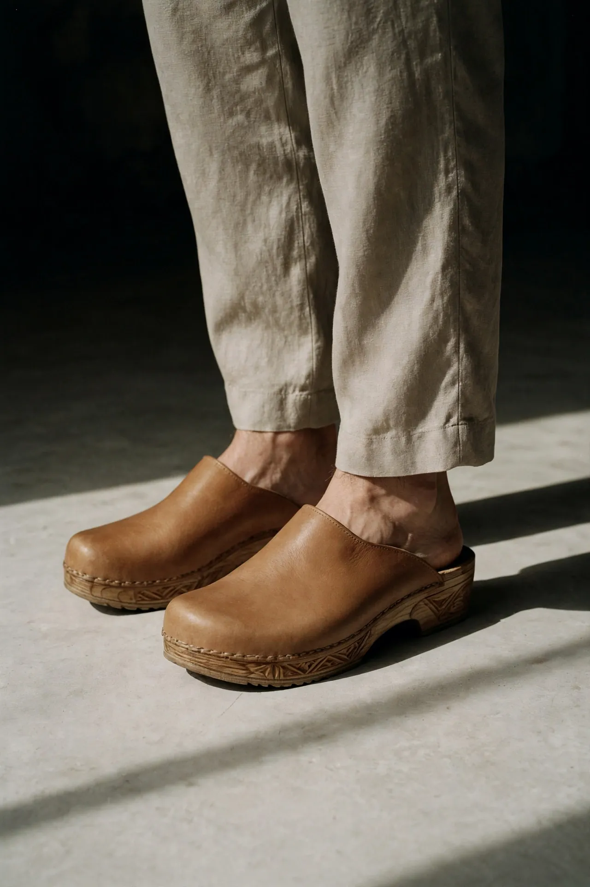
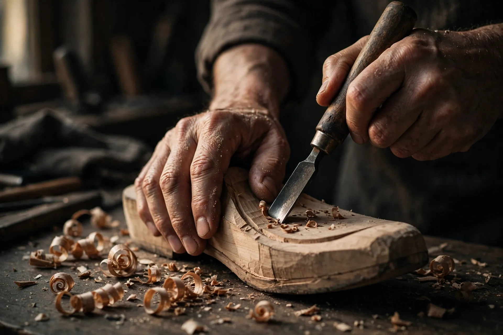

Sol kayu sonokeling.
Kayu sonokeling — rosewood Indonesia — dipahat dari balok, ditempel setelah upper selesai. Tidak disatukan: diperbaiki.
Sebagian besar sepatu Jejakara berpunggung kayu sonokeling (Dalbergia latifolia), keras dan berurat gelap, biasanya dipakai untuk mebel. Kami pilih karena dua alasan: rapat seratnya tahan lembap lebih baik dari kayu ringan mana pun di harga ini, dan bunyi ketuknya di lantai batu — satu dari alasan nama Jejakara ada.
Tiap pasang dipahat dari balok sesuai pola, disekam, lalu ditempel resol-first: upper dijahit dulu, baru disambung ke kayu dengan paku tembaga dan lem kulit. Karena sistemnya tempel, sol yang aus tiga tahun lagi tinggal dibuka dan diganti — struktur atasnya tidak tersentuh.

Sekam & pahat tangan — atelier YogyakartaKayu lainnya punya tempatnya sendiri
Untuk sol yang lentur — sandal dan loafer — kami memakai karet alami yang disablon sendiri, karena sonokeling justru merasa kaku di model tersebut. Filosofinya tetap sama: bahan yang bisa diperbaiki, bukan bahan yang menunggu diganti.
Lihat koleksinya